地政学
ヒヴァはホラズムのオアシスにあり、アムダリヤ下流、トルクメニスタン国境、カラカルパクスタン、ブハラ方面を結ぶ内陸の接点です。シルクロード北路と水利の記憶を通じて地域の歴史を映します。国境も重要です。
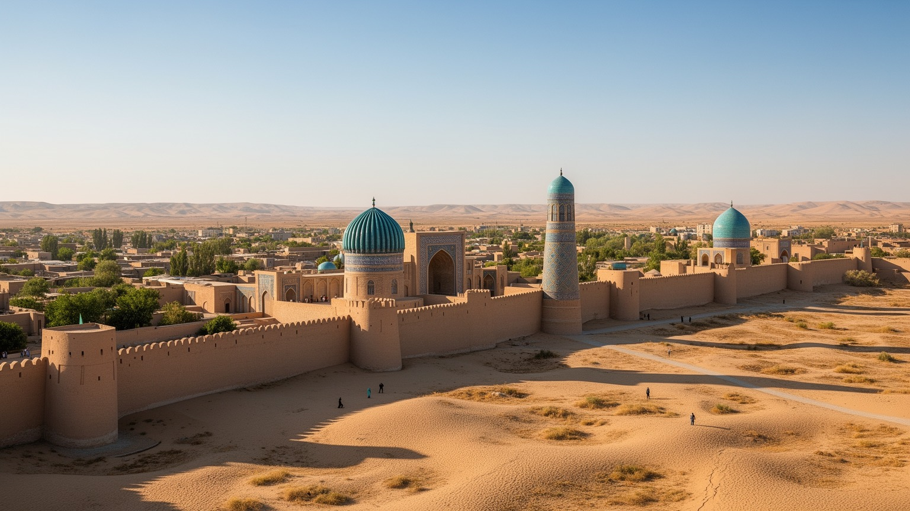
🇺🇿 ウズベキスタン / ホラズム州 / World City Atlas
アムダリヤ下流のオアシスに残る城壁都市です。イチャン・カラの遺産、ホラズムの水利、手工芸、信仰、観光労働、保存と生活の緊張が、砂漠の端の小都市を世界史へ開きます。
ホラズムの古都
ヒヴァは保存された景観だけでなく、アムダリヤ下流の水、農村、手工芸、観光、近隣のウルゲンチとの交通に支えられています。城壁の内側と外側を合わせて読むと、古都の現在が見えてきます。
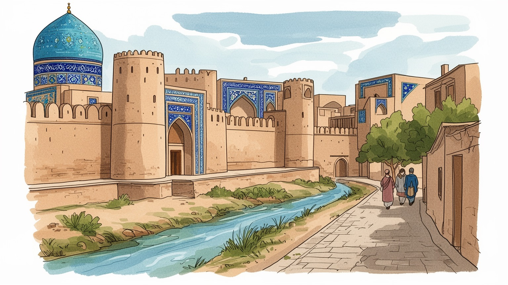
ヒヴァはホラズムのオアシスにあり、アムダリヤ下流、トルクメニスタン国境、カラカルパクスタン、ブハラ方面を結ぶ内陸の接点です。シルクロード北路と水利の記憶を通じて地域の歴史を映します。国境も重要です。
雇用は観光、宿泊、飲食、ガイド、手工芸、農産物加工、建設、小売、交通に広がります。世界遺産の名声は収入を生みますが、季節需要、低賃金、若者の流出、保存規制との調整も暮らしを左右します。家族経営も多いです。
モスク、マドラサ、霊廟、木彫、青いタイル、ホラズムの音楽と舞踊が、イスラム都市の時間を伝えます。信仰は観光景観だけでなく、家族行事、墓参、近所の挨拶、職人の仕事にも息づいています。深い街の記憶です。
旅人はイチャン・カラを歩きますが、住民は学校、市場、病院、郊外の家、ウルゲンチへの道を使って暮らします。古都の魅力を守るには、観光客の滞在と住民の日常が互いを消さない設計が必要です。夜の静けさも大切です。
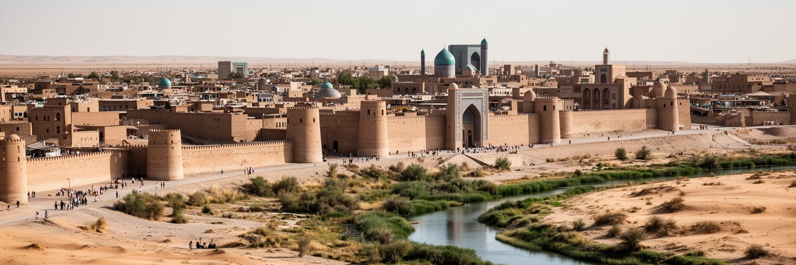
ヒヴァを理解する入口は、砂漠の中に突然現れる城壁だけではありません。町はアムダリヤ下流のホラズム・オアシスにあり、運河、畑、集落、交易路が重なった水の都市です。乾いた大地で人が暮らすには、水を引き、土を固め、日陰を作り、作物を守る技術が必要でした。イチャン・カラの土壁は観光写真の背景として有名ですが、その素材と形は乾燥地の生活技術ともつながっています。城壁の内側には宮殿、マドラサ、モスク、ミナレット、霊廟、商店、住居が詰まり、外側には現代の住宅、学校、市場、道路、ホテルが広がります。旅人が見る古都の輪郭は閉じた博物館のように見えますが、実際には周辺農村、ウルゲンチ空港、鉄道、近隣都市からの労働と物資が毎日入ります。水路の維持、地下水、排水、夏の暑さ、冬の寒さ、土壁の補修は、保存と生活を同時に支える実務です。ヒヴァの美しさは、単に過去が残った結果ではなく、乾燥地で都市を保つ努力が続いていることにあります。城壁を一周して見ると、外敵を防いだ境界であると同時に、観光と日常、遺産と住宅、砂漠と水田を分けながら結ぶ線であることが分かります。朝夕の低い光は壁の起伏を際立たせ、土を塗り直す手仕事や道端の植栽まで見せます。小さな補修の積み重ねが、城壁都市を過去の模型ではなく、今も呼吸する場所にしています。
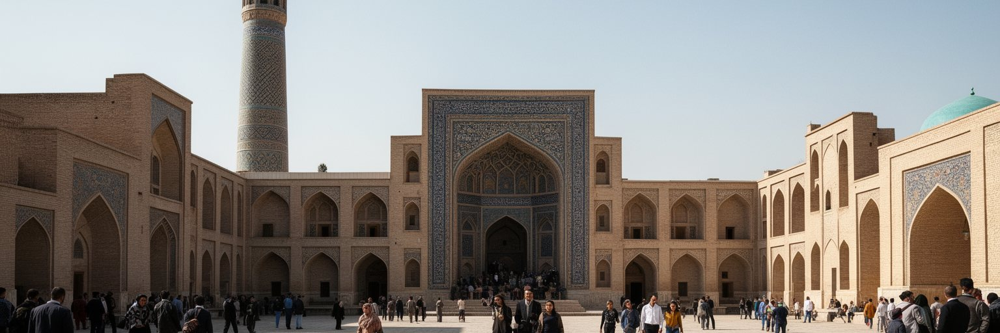
ヒヴァは十七世紀以降、ホラズムを支配したヒヴァ・ハン国の首都として強い政治的な意味を持ちました。宮殿、謁見の中庭、城門、マドラサ、霊廟は、支配者の権威、宗教的正統性、交易の管理、軍事の緊張を一つの都市景観に集めています。クフナ・アルクやタシュ・ハウリ宮殿を歩くと、外から見える装飾の美しさだけでなく、権力者、官僚、兵士、職人、商人、女性たちの生活が複雑に重なっていたことが想像できます。ヒヴァの政治史は、ロシア帝国の南下、周辺遊牧勢力、ペルシアやブハラとの関係、二十世紀初頭の革命とソ連化にもつながります。現在の都市は独立ウズベキスタンの一地方都市ですが、ハン国の首都だった記憶は観光、教育、地域の誇りに強く残っています。ただし、王権の建築を美しい舞台として見るだけでは不十分です。政治都市は税、軍役、労働動員、身分差、暴力も抱えていました。保存された宮殿は、権力の輝きと、それを支えた無名の労働を同時に考える場所です。今日のヒヴァでは、遺産をどう説明し、誰の記憶を中心に置くかが観光の質を左右します。ハンの都を読むことは、栄華を称えるだけでなく、支配、交渉、抵抗、地域社会の継続を読み解くことでもあります。宮殿の小部屋や中庭の動線は、儀礼の華やかさと管理の細かさを残しています。そこから、地方の小都市が広い草原と砂漠をどう統治したのかも見えてきます。
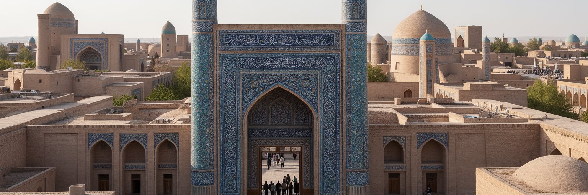
イチャン・カラは、ウズベキスタンを代表する世界遺産としてヒヴァの名を広げています。城壁の内側にマドラサ、モスク、霊廟、宮殿、ミナレット、木彫の柱、青いタイル、狭い路地が密集し、旅行者は短い徒歩圏でホラズム建築の濃い層を体験できます。カルタ・ミノルの未完成の塔、イスラーム・ホジャ・ミナレット、ジュマ・モスクの木柱、パフラヴァン・マフムード廟は、都市の視線を引きつける強い目印です。世界遺産であることは保存資金、国際的な注目、観光収入をもたらしますが、同時に生活の自由度を狭めることもあります。建物の修復方法、看板、店舗、宿泊施設、住民の改修、車の通行、夜間照明、土産物店の量は、保存と商業の境界を常に揺らします。遺産地区が美しく整いすぎると、そこに暮らした人の匂いが薄れ、都市が舞台装置のように見える危険があります。一方で、適切な管理がなければ土壁や木材、タイルは傷み、観光圧力も景観を壊します。イチャン・カラの価値は、古い建物が並んでいることだけではありません。信仰、学問、商い、家族生活、権力、職人技が同じ城内で重なってきた密度にあります。その密度を住民に負担を押しつけずに伝えることが、ヒヴァ観光の核心です。昼の混雑と早朝の静けさは、同じ路地に別の表情を与えます。訪れる側が急がず歩くほど、保存された面だけでなく、町が使われてきた痕跡も読めます。
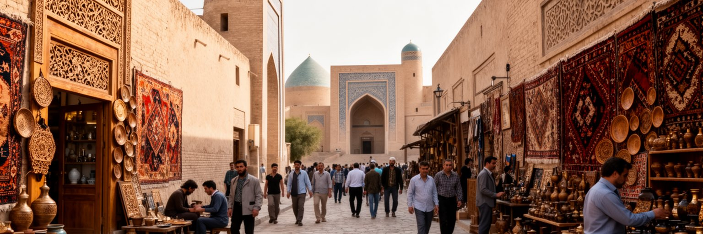
ヒヴァの現代経済は、観光と手工芸に大きく支えられています。城内の宿、レストラン、カフェ、土産物店、ガイド、写真撮影、タクシー、清掃、修復工事、舞踊や音楽の上演は、世界遺産を訪れる人の流れから収入を得ます。木彫の扉、絨毯、スザニ、陶器、金属細工、帽子、ミニアチュール風の絵は、地域の技術と観光市場をつなぐ商品です。職人の仕事は文化の継承であると同時に、材料費、販売場所、仲介、季節需要、客の値引き交渉に左右される小さな経済でもあります。観光が伸びると、若い人に地元で働く機会が増えますが、英語やロシア語の力、接客技能、資本を持つ人と持たない人の差も広がります。宿泊施設の増加は家屋の修復を促す一方、住居が商業利用へ変わり、中心部の生活が細ることもあります。パンデミックや国際情勢で旅行者が減れば、収入はすぐ不安定になります。ヒヴァの観光経済を読むには、青いタイルの美しさだけでなく、朝早く露店を開ける人、SNSで予約を受けるガイド、暑い日に水を売る子ども、修復現場で土を扱う職人を見ます。文化を売る町が尊厳を保つには、安い土産物だけでなく、技能に正当な対価が払われる仕組みが必要です。地元の材料を使い、修理できる品を作ることは、観光収入を町に残す方法にもなります。手仕事の価値が理解されるほど、若い職人が学ぶ理由も増えます。
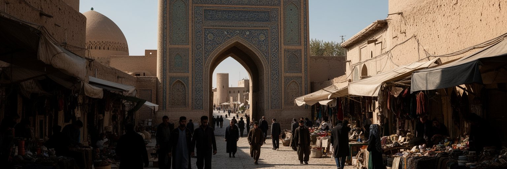
ヒヴァの歴史を誠実に読むには、奴隷交易と暴力の記憶を外せません。近世から十九世紀にかけて、ヒヴァは中央アジアの交易都市であると同時に、捕虜や奴隷が売買された場所としても知られました。周辺の草原、砂漠、ペルシア方面、ロシア帝国との境界で起きた襲撃、捕獲、身代金、強制労働は、都市の繁栄と無関係ではありません。宮殿やマドラサの華麗な装飾を見る時、その建設と維持を支えた労働、身分差、移動の自由を奪われた人々の存在も考える必要があります。観光地としてのヒヴァは、青いタイルと砂色の城壁が強く記憶に残りますが、美しい景観だけを強調すれば、都市の暗い層は見えなくなります。暴力の歴史を語ることは、町を貶める行為ではありません。むしろ、地域が抱えた複雑さを正面から扱い、現在の人権、移民労働、貧困、ジェンダー、観光労働の問題へつなげるために必要です。ガイドの説明、博物館展示、学校教育、案内板は、栄光と苦痛の両方を扱う力を持ちます。旅人もまた、写真映えする場所を消費するだけでなく、誰が移動を強いられ、誰が利益を得たのかを考える姿勢が求められます。ヒヴァの価値は、過去を美化することではなく、記憶の複雑さに耐えながら都市を理解させる点にあります。沈黙してきた人々の名前は残りにくいですが、その不在を意識することも記憶の一部です。古都の説明が豊かになるほど、観光は消費から学びへ近づきます。
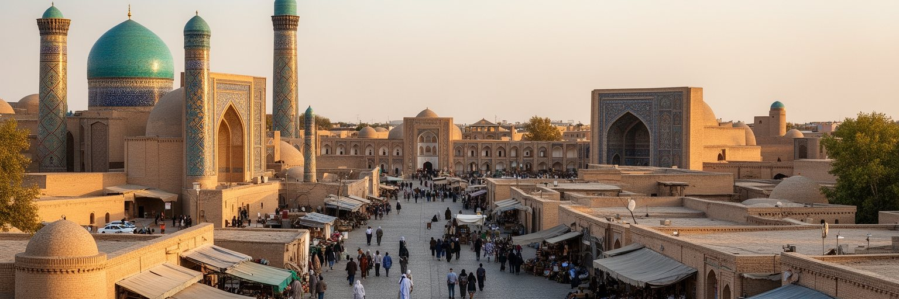
ヒヴァの城内には、モスク、マドラサ、霊廟が密に並び、イスラムの学問と信仰が都市の骨格を作ってきたことを示しています。マドラサは宗教教育だけでなく、法、言語、詩、天文学、商人の教養、人材の移動とも関わりました。霊廟や聖者への敬意は、家族の祈り、巡礼、祝祭、地域の誇りを支えます。ジュマ・モスクの木柱やパフラヴァン・マフムード廟の空間は、観光客にとって印象的な建築であると同時に、住民にとっては精神的な記憶の場所です。独立後のウズベキスタンでは、宗教文化の再評価が進みましたが、国家の世俗性、宗教教育の管理、若者の信仰表現とのバランスも続いています。ヒヴァでは信仰が観光に見られるため、礼拝の静けさと見学の好奇心が同じ場所に重なることがあります。写真、服装、声の大きさ、墓所への敬意は、旅人が都市文化に参加する基本的な作法です。宗教を古い装飾として眺めるだけでは、ヒヴァの時間は浅くなります。木彫の扉、アラビア文字、タイルの文様、墓所への参拝、家族の食事は、学問、信仰、生活が分かれていない都市の姿を伝えます。ヒヴァのイスラム文化は、遠い過去の展示ではなく、現代の住民が自分の町を理解する言葉でもあります。礼拝時間の前後に人の流れを感じると、建物が観光対象から共同体の場所へ戻ります。静かな敬意を払うことが、町の深さを知る近道です。
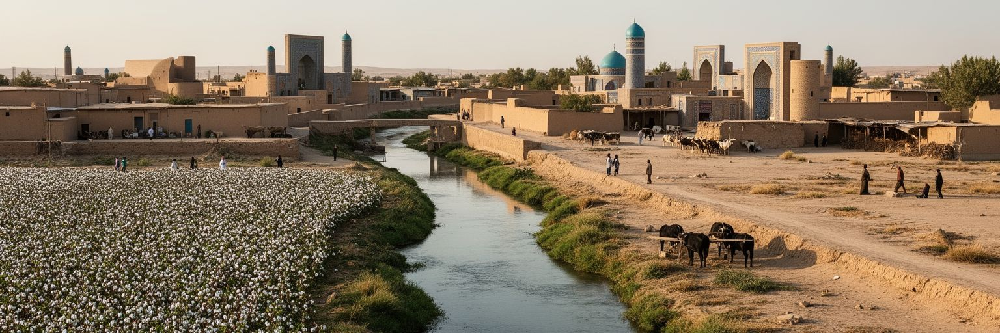
ヒヴァの暮らしは、アムダリヤ下流の水環境と切り離せません。ホラズム州は灌漑農業に支えられ、綿花、小麦、野菜、果物、畜産、加工業が都市周辺の生活を作ります。乾燥地で農業を続けるには運河の管理、排水、塩害対策、土壌の保全が欠かせません。さらにアラル海縮小の影響は、ホラズムを含む下流域の環境不安を長く形づくってきました。風で運ばれる塩分や粉じん、水質、健康、農業収入、移住は、観光客の目には見えにくい論点です。ヒヴァの古都景観は砂漠の美しさとして消費されやすいですが、その背後には水をめぐる政治と労働があります。水は農村の収穫だけでなく、町の庭、街路樹、宿泊施設、飲食店、清掃、住民の健康を支えます。観光が増えれば水需要も増え、ホテルの快適さと地域の資源配分の関係が問われます。気候変動で夏の暑さが強まるほど、日陰、緑地、断熱、給水、医療へのアクセスは重要になります。ヒヴァの環境を読むことは、城壁の保存だけでなく、地域の水循環を守ることです。土壁を維持する技術と農地を潤す水利は、どちらも乾燥地で都市を続ける知恵です。古都の未来は、観光収入だけでなく、周辺農村が水と仕事を保てるかにもかかっています。市場に並ぶ果物や野菜は、見えない運河網と農家の労働の結果です。そのつながりを知ると、観光地の一皿にも地域環境の重みが宿ります。
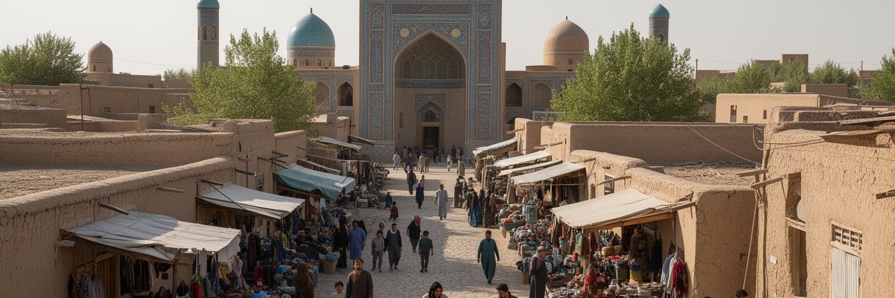
ヒヴァの日常生活は、イチャン・カラの内側だけで完結しません。城外には住宅、学校、診療所、市場、行政施設、バス停、修理店、結婚式場、郊外へ向かう道が広がり、多くの住民は観光地図の外で普通の時間を過ごしています。家族や親族の結びつきは強く、冠婚葬祭、食事、近所の助け合い、季節の農作業が生活のリズムを作ります。観光業で働く人も、勤務後には買い物をし、子どもを学校へ送り、家の修理や親族の用事に向き合います。古い家屋を宿へ変える動きは収入を生みますが、中心部に住む人が減れば、夜の城内は観光客のための舞台に近づきます。保存地区では改修の自由度が限られ、冷暖房、台所、浴室、通信、車の出入りをどう整えるかが課題になります。若者にとっては、地元に残る仕事の種類、大学や専門教育への距離、ウルゲンチやタシュケントへの移動が将来を左右します。高齢者には医療、日陰の歩道、近所の店、孫を見守る中庭の涼しさが暮らしやすさを決めます。ヒヴァを生活都市として見るには、城門の外へ出て、朝の市場、学校帰りの子ども、ナンの匂いと夕方の家族の会話を感じることが大切です。古都の価値は、住民が住み続けられる時にこそ深まります。観光客のいない冬の平日にも、町は買い物、通学、修理、親族訪問で動いています。その普通の時間を尊重できるかが、訪問者にも都市にも大切です。
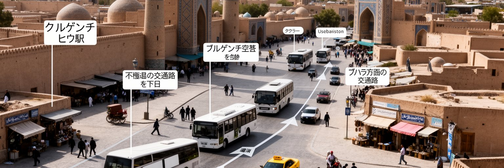
ヒヴァは小都市ですが、交通の改善によって世界との距離を縮めています。近隣のウルゲンチは空港、鉄道、州都機能を持ち、ヒヴァ観光の実務的な玄関口です。旅行者は空路や鉄道でウルゲンチへ入り、タクシーやバスでヒヴァへ向かうことが多く、近年は鉄道接続の改善によってブハラ、サマルカンド、タシュケント方面との結びつきも強まっています。交通が便利になるほど、滞在日数の増加、ホテル投資、地方観光の分散が期待されますが、日帰り客が増えるだけでは地元に落ちる収入は限られます。都市側には、駅や駐車場から城内への歩行動線、暑さを避ける日陰、案内表示、公共トイレ、障害者や高齢者の移動、夜間の安全が求められます。住民にとって交通は観光客を運ぶ装置だけではありません。病院、大学、行政手続き、仕入れ、親族訪問、季節労働のためにウルゲンチや他地域へ移動する生活基盤です。道路が車で混みすぎると、城壁周辺の静けさや歩行者の安全は損なわれます。ヒヴァの交通政策は、大量の観光バスを城門近くへ入れることよりも、滞在しやすく歩きやすい町を作ることに価値があります。内陸の古都が開かれるほど、移動の速さと場所の静けさをどう両立するかが問われます。駅前から城壁までの最初の数分は、訪問者が町を判断する時間です。そこに木陰、案内、地元の商いが整えば、通過点ではない滞在型の古都になれます。
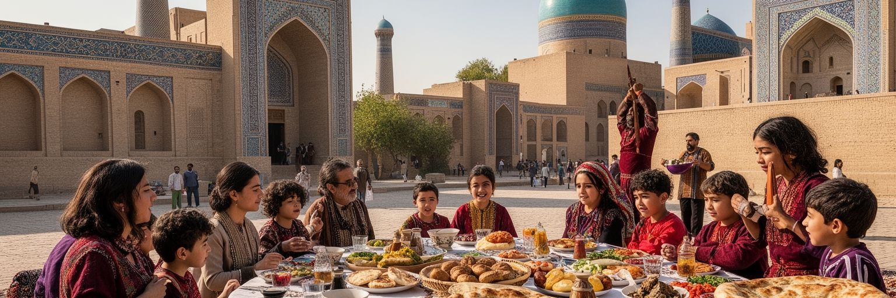
ヒヴァの文化は、建築だけでなく食卓、音楽、踊り、言葉、衣装、家族の祝いにあります。ホラズム地方には独特の音楽と舞踊の伝統があり、観光向けの上演だけでなく、結婚式や祭りの夜にも人を結びます。食ではプロフ、シュヴィト・オシのような地方色のある麺料理、ナン、肉料理、乳製品、果物、緑茶が、乾燥地の暮らしと客をもてなす文化を伝えます。城内のレストランで食べる料理は旅の楽しみですが、家庭の台所、市場の仕入れ、農村から届く野菜や果物、暑い日の水分補給も同じ食文化です。ホラズムの方言やロシア語、観光業で使われる英語、ラジオやSNSの宣伝は、町の音を多層にします。舞踊や音楽が観光商品になると、短いステージに分かりやすい華やかさが求められますが、地域文化の厚みは見せ場だけでは測れません。衣装の準備、楽器の修理、師弟関係、家族の記憶、祭りの時間、学校のサッカーやクラシュの応援が文化を保っています。若者が地元文化を誇りに思いながら、新しい仕事や表現へ進める環境も大切です。ヒヴァの路地を歩く時、青いタイルに目を奪われますが、夕方に聞こえる音楽、焼きたてのナンの匂い、茶をすすめる言葉が、古都を生きた町へ戻します。文化は壁に保存されるだけでなく、毎日の食卓で更新されています。観光客が料理名を覚えるだけでなく、誰が育て、運び、調理したのかを知ると、食の記憶は地域への理解に変わります。
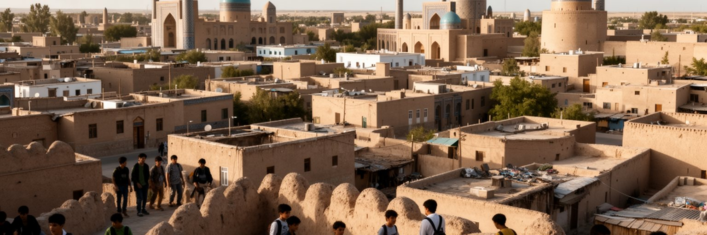
ヒヴァの未来は、保存と生活をどう両立させるかにかかっています。世界遺産としての知名度は高まり、ウズベキスタン観光の開放、鉄道や空路の改善、国際的な注目によって訪問者は増えやすくなっています。これは宿泊、飲食、手工芸、案内、修復、交通に仕事を生みますが、都市が観光だけに依存すれば、外部の景気や国際情勢に弱くなります。古い建物を守るには専門技術と資金が必要で、土壁、木材、タイル、排水、振動、湿気、日差しを丁寧に管理しなければなりません。同時に、住民には快適な住宅、教育、医療、通信、公共交通、働く場所が必要です。保存地区を美しく整えるだけで、若者が出ていき、高齢者だけが残る町になれば、遺産は生活の熱を失います。観光収入を地域へ還元し、職人の技能を育て、学校で地域史を学び、女性や若者が働きやすい制度を作ることが重要です。ヒヴァは大都市ではありませんが、世界が注目する小都市として、遺産管理、環境、労働、住まいの課題が凝縮されています。城壁の内側を守るためには、外側の生活圏と周辺農村も守らなければなりません。保存とは過去を止めることではなく、住民が未来を選べる条件を整えることです。ヒヴァの美しさは、その条件が保たれる時に最も説得力を持ちます。行政、専門家、職人、住民、事業者が同じ情報を共有し、修復の優先順位や観光の限度を話し合える場も必要です。小さな町ほど、一つの判断が生活全体に響きます。
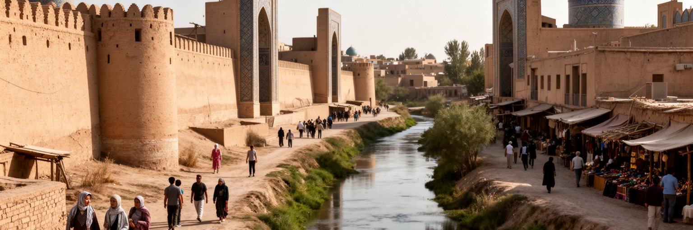
ヒヴァを世界都市として読む意味は、人口やGDPの大きさではありません。ここには、オアシスの水利、シルクロード、ハン国の政治、イスラム学問、奴隷交易の記憶、ソ連後の国家観光、世界遺産保存、手工芸、農村生活、環境不安が凝縮されています。小さな城壁都市でありながら、中央アジアの乾燥地で人が都市を作り、権力を築き、信仰を学び、商いをし、暴力を経験し、現在は観光を通じて世界と向き合う過程を見せます。旅人にとってヒヴァは美しい古都ですが、住民にとっては仕事、学校、家族、医療、移動、住宅、将来の選択が詰まった生活の場所です。青いタイルと砂色の壁を見た後で、城外の市場、水路、若者の仕事、職人の手、ガイドの説明、修復中の土壁にも目を向けると、都市の理解は深くなります。ヒヴァの課題は、観光収入を増やすことだけではありません。記憶を正直に語り、保存の負担を公平に分け、住民が住み続け、周辺農村と水環境を守ることです。世界的な注目が強まるほど、町はきれいな舞台として消費される危険を抱えます。だからこそ、ヒヴァを歩くことは、遺産と日常がどう共存できるかを考える経験になります。小都市の細い路地には、中央アジアの歴史と現代観光の難問が驚くほど濃く集まっています。短い滞在でも、城壁内外を往復し、働く人の時間や水の流れを意識すると、古都は一枚の写真から複数の社会が重なる場所へ変わります。